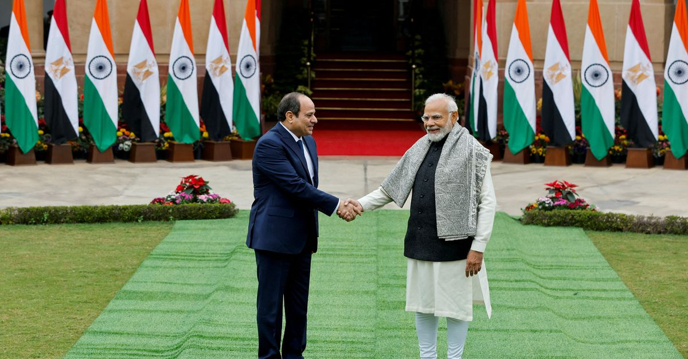

Egyptian Minister Denies Credit Line with India
Image Credits https://www.reuters.com/business/india-providing-credit-line-egypt-bloomberg-news-2023-06-12/
The news of a potential credit line being opened between India and Egypt has been circulating for months. However, the Egyptian Supply Minister, Ali Moselhy, officially denied these rumors on Monday. While payments using currencies other than the dollar are being discussed, no credit line has been opened between the two countries.

The Importance of the Suez Canal to Egypt's Economy
The Suez Canal is a vital shipping route connecting Europe and Asia, and it plays a significant role in Egypt's economy. In 2019, the canal saw a revenue of $5.8 billion and handled 18,880 vessels. The revenue earned from the canal contributes significantly to the country's foreign exchange reserves.
Source: Ship Technology

The Impact of Tourism on Egypt's Economy
Tourism has traditionally been a significant contributor to Egypt's economy, accounting for 11% of the country's GDP in 2019. However, the sector has suffered greatly due to the COVID-19 pandemic, with revenues expected to drop by 70%. The Egyptian government is working to revive the industry by implementing health and safety protocols and offering incentives to travelers.
Source: World Bank

India and Egypt's Bilateral Trade
India and Egypt have been working to strengthen their economic ties. In 2019-20, trade between the two countries reached $3.77 billion, with Egypt exporting petroleum oil, fruits, and vegetables to India, and India exporting pharmaceuticals, textiles, and machinery to Egypt. However, obstacles like high tariffs and non-tariff barriers still exist, limiting the full potential of the trade relationship.
Source: The Economic Times
Conclusion
While the news of a credit line between India and Egypt proved to be false, the two countries continue to partner and work towards strengthening their economic ties. The Suez Canal and tourism industry remain crucial to Egypt's economy, while bilateral trade with India has the potential to grow further with the removal of existing barriers.
Curated by Team Akash.Mittal.Blog
Share on Twitter Share on LinkedIn